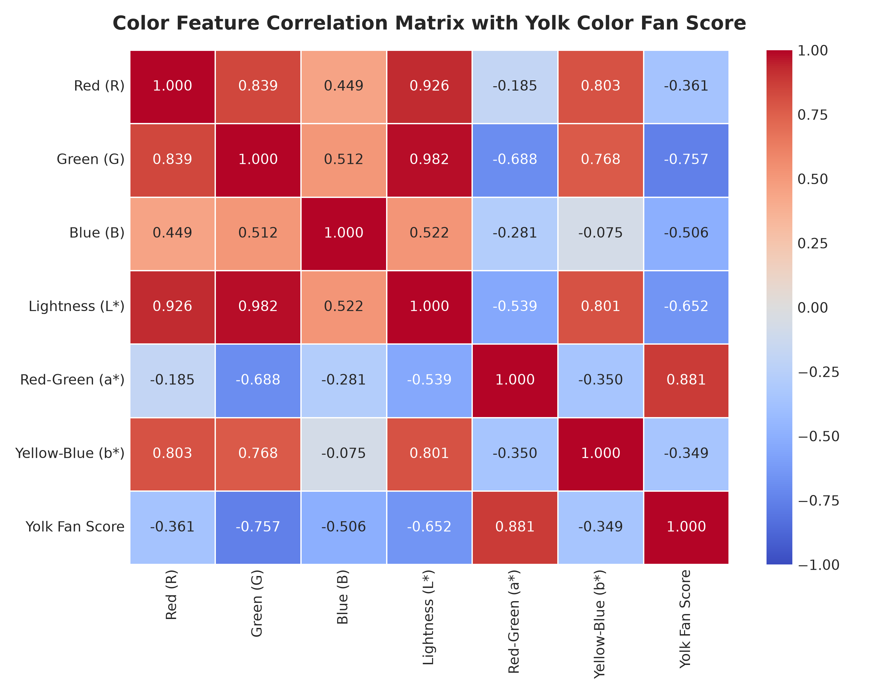
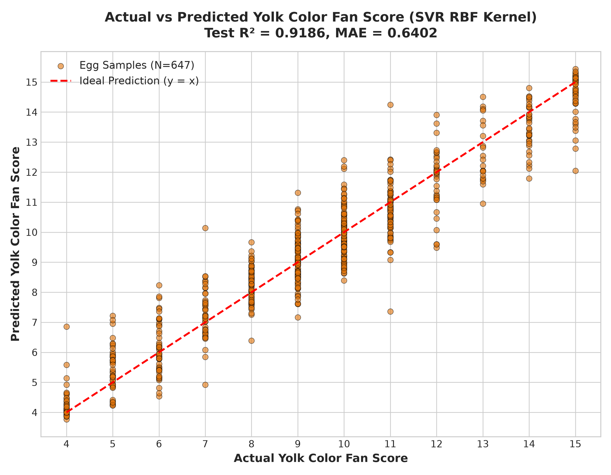

ระบบประเมินระดับสีไข่แดง DSM Yolk Color Fan ด้วย Computer Vision & On-Device SVR
ตรวจวัดระดับสีไข่แดงอัตโนมัติ 100% บนสมาร์ตโฟน โดยไม่ต้องเชื่อมต่ออินเทอร์เน็ตหรือคลาวด์ ด้วยสถาปัตยกรรม Pure Math SVR Inference ความแม่นยำสูงระดับ R² = 0.9185 และเวลาประมวลผลต่ำกว่า 1 มิลลิวินาที
ที่มาและความสำคัญของปัญหา (Motivation & Challenges)
การเปรียบเทียบระหว่างวิธีการดั้งเดิมและแนวทางแก้ไขด้วยระบบดิจิทัล
- การใช้พัดเทียบสี DSM (Roche Fan 1–15): ใช้สายตามนุษย์มองเทียบแผ่นสี ซึ่งเป็นอัตวิสัย (Subjective) ขึ้นกับประสบการณ์และความเมื่อยล้าของสายตาผู้ตรวจ
- ความไวต่อแสงแวดล้อม (Lighting Bias): ไฟฟลูออเรสเซนต์ แสงแดด หรือหลอดไส้ ส่งผลให้สายตามองเห็นสีไข่แดงผิดเพี้ยนไป 1–3 ระดับ
- Human Error สูง: ความคลาดเคลื่อนระหว่างผู้ประเมินคนละคน (Inter-observer variability) มักสูงกว่า 1.5 ระดับ
- เครื่องวัดสีเชิงอุตสาหกรรม (Colorimeter): มีราคาหลักแสนบาท ขนาดใหญ่ พกพาตรวจในฟาร์มหรือห้องครัวได้ยาก
- เปลี่ยนสมาร์ตโฟนเป็นเครื่องวัดมาตรฐาน: สแกนและตัดขอบไข่แดงอัตโนมัติด้วยระบบคอมพิวเตอร์วิทัศน์ระดับพิกเซล
- แปลงเข้าสู่มาตรฐานสากล CIELAB (D65): แยกมิติความสว่าง (L*) ออกจากเนื้อสีแท้จริง (a*, b*) ขจัดปัญหาแสงเงาสะท้อน
- อัลกอริทึม SVR (RBF Kernel): ดัดผิวทำนายแบบ Non-linear แม่นยำเทียบเท่าเครื่องวัดสีระดับห้องปฏิบัติการ
- ทำงานออฟไลน์ 100% (No Cloud): ไม่มีค่าเซิร์ฟเวอร์รายเดือน ปลอดภัยต่อความลับของฟาร์ม และประมวลผลทันทีในเสี้ยววินาที
สถาปัตยกรรมระบบ 4 ขั้นตอน (End-to-End Pipeline)
การเชื่อมโยงจากภาพถ่ายไข่แดงดิบ สู่การวิเคราะห์สี และการทำนายคะแนนบนมือถือ
แปลง BGR → HSV Masking กรองสีส้ม-เหลือง แยกแครอทด้วย Connected Components ตัดภาพสี่เหลี่ยมจัตุรัสครอบไข่แดง
เจาะเฉพาะวงกลมกลาง 42% เว้นขอบสะท้อนแสง แปลงระบบสี RGB สู่ CIELAB (D65) สกัดได้ 6 เวกเตอร์คุณลักษณะ
เปรียบเทียบ 5 อัลกอริทึมด้วย 5-Fold Cross Validation คัดเลือก SVR (RBF Kernel) ที่ทำคะแนนแม่นยำสูงสุด R² = 0.9185
แปลงพารามิเตอร์คณิตศาสตร์เป็น JSON (107 KB) โหลดเข้ารันบน Flutter มือถือด้วย Pure Dart Math รวดเร็วระดับไมโครวินาที
ขั้นตอนที่ 1: การตัดภาพไข่แดงอัตโนมัติ (Auto-Crop Yolk)
การประยุกต์ใช้ HSV Color Masking, มอร์โฟโลยี และ Connected Component Analysis
- HSV Color Space: แยก "เฉดสีแท้จริง" (Hue 10–28 OpenCV / 20°–56° Dart) ออกจากความสว่าง
- Saturation Threshold (≥ 80 / ≥ 0.314): จุดชี้ขาดสำคัญ! บังคับว่าต้องมีความสดของสี ทำให้ ตัดไข่ขาว จานสีขาว และพื้นหลังสีครีมทิ้งได้ 100%
- Morphological Cleaning: ใช้ตัวดำเนินการ Close และ Open ด้วยเคอร์เนลวงกลมขนาด 7×7 เพื่ออุดรูพรุนและตัดจุดเม็ดสีรบกวน
- Connected Component Analysis (เคสแครอท): หากมีเศษแครอทสีส้มในจาน ระบบจะวัดพื้นที่ก้อนวัตถุและเลือกเฉพาะก้อนที่ใหญ่ที่สุด (ไข่แดง 11,975 พิกเซล vs แครอท 1,329 พิกเซล) ตัดแครอททิ้งได้ 100%

.txt แบบ Normalized Coordinates มาตรฐาน YOLO ครบทั้ง 647 รูปโดยอัตโนมัติ พร้อมส่งต่อให้งานวิจัยรุ่นต่อไปทันที
ขั้นตอนที่ 2: การสกัดฟีเจอร์ค่าสี (Circular Mask & CIELAB)
การขจัดแสงสะท้อนมันวาว และการแปลงปริภูมิสีสู่มาตรฐานสากล CIE 1976
"รูปภาพดิจิทัลตัดมาเป็นสี่เหลี่ยม แต่ไข่แดงแท้จริงเป็นทรงกลม"
- ตัดมุมทั้ง 4 มุมทิ้ง: ป้องกันเศษไข่ขาวหรือขอบจานที่ติดมาตรงมุมภาพเข้ามาปนเปื้อน
- ตัดแสงสะท้อนขอบไข่ (Specular Highlights): บริเวณขอบไข่แดงจะมีความโค้งนูนและสะท้อนแสงไฟนีออน
- เจาะเฉพาะเนื้อไข่แดงแท้: รัศมี $R = \min(W, H) \times 0.42$ ดูดเฉพาะพิกเซลเนื้อไข่แดงที่สม่ำเสมอที่สุด
| ฟีเจอร์ | มาตรฐาน | ความสำคัญ |
|---|---|---|
| R, G, B | sRGB (0–255) | ค่าความเข้มแสงแม่สีจากเซนเซอร์กล้อง |
| L* | CIELAB | ความสว่าง (Lightness: 0=มืด, 100=ขาว) |
| a* | CIELAB | พระเอกสำคัญ! แกนเขียว(-) ถึง แดง(+) สัมพันธ์กับเกรดสีสูงสุด |
| b* | CIELAB | แกนน้ำเงิน(-) ถึง เหลือง(+) สะท้อนปริมาณแคโรทีนอยด์ |

ขั้นตอนที่ 3: การเปรียบเทียบโมเดล (Model Benchmark & A/B Test)
ทดสอบ 5 อัลกอริทึมด้วย Stratified 5-Fold Cross Validation บนชุดข้อมูล 647 ภาพ
| อัลกอริทึม (Candidate Models) | Original R² | Auto-Crop R² | การพัฒนา (Δ R²) | MAE | RMSE | แม่นยำใน ±1 ระดับ | ผลสรุป |
|---|---|---|---|---|---|---|---|
| SVR (RBF Kernel) 🥇 | 0.9175 | 0.9185 | +0.0010 | 0.6403 | 0.8407 | 92.7% | อันดับ 1 ชนะเลิศ 🏆 |
| Gradient Boosting Regressor | 0.9063 | 0.9107 | +0.0045 | 0.6554 | 0.8797 | 92.3% | รองชนะเลิศอันดับ 1 |
| Random Forest Regressor | 0.9087 | 0.9078 | -0.0009 | 0.6555 | 0.8943 | 92.3% | รองชนะเลิศอันดับ 2 |
| Linear Regression | 0.8718 | 0.8738 | +0.0020 | 0.8071 | 1.0450 | 84.9% | โมเดลเชิงเส้นพื้นฐาน |
| Ridge Regression (α=1.0) | 0.8545 | 0.8568 | +0.0022 | 0.8769 | 1.1130 | 82.8% | โมเดลเชิงเส้นจำกัดน้ำหนัก |
- Auto-Crop ยกระดับความแม่นยำ AI ได้จริง: โมเดลเกือบทุกตัวมีค่า R² สูงขึ้นและค่าความคลาดเคลื่อน MAE ลดลงเมื่อฝึกด้วยภาพที่ผ่าน Auto-Crop
- ความเที่ยงตรงระดับพิกเซล: ระบบคอมพิวเตอร์ตัดภาพด้วยความสม่ำเสมอสูงกว่าสายตามนุษย์ ลด Noise ในข้อมูลตั้งต้น
โมเดล SVR (RBF Kernel) สามารถทำนายคะแนนไข่แดงได้ถูกต้องตรงเป๊ะ หรือคลาดเคลื่อนไม่เกิน 1 ระดับสี สูงถึง 92.7% ซึ่งเทียบเท่าหรือดีกว่าความแม่นยำของมนุษย์ผู้เชี่ยวชาญในฟาร์ม
ทำไม SVR (RBF Kernel) ถึงชนะโมเดลชนิดอื่น?
ทฤษฎี Support Vector Regression, ε-Insensitive Tube และ Gaussian Non-linearity
การเปลี่ยนแปลงของระดับสีไข่แดงในพื้นที่สี 6 มิติ มีพฤติกรรมเป็น Non-linear Manifold เส้นตรงทั่วไปไม่สามารถฟิตได้ดี ฟังก์ชัน RBF จึงดัดเส้นโค้งรับข้อมูลได้อย่างแม่นยำ
ระบบสร้าง "ท่อความเผื่อ" ความกว้าง ε = 0.1 จุดข้อมูลที่คลาดเคลื่อนเล็กน้อยจะได้รับโทษเป็น 0 ทำให้โมเดล ไม่ถูกรบกวนจาก Noise หรือแสงสะท้อนเล็กๆ น้อยๆ
โมเดลไม่ได้ท่องจำทุกจุด แต่คัดเลือกจุดวิกฤต 556 จุด จาก 647 ภาพ มาสร้างระนาบรองรับ ทำให้มีความทนทานต่อ Overfitting เหนือกว่า Decision Trees อย่างชัดเจน

ขั้นตอนที่ 4: สถาปัตยกรรม On-Device AI (107 KB Pure JSON)
การแกะสมการ Scikit-Learn เป็น Pure Dart Math ไม่พึ่งพา TFLite, ONNX หรือ Backend
| มิติเปรียบเทียบ | TFLite / ONNX | Pure Math JSON (ของเรา) 🏆 |
|---|---|---|
| ขนาดไฟล์ Dependency | 15 – 30 MB (แอปบวม) | 0 MB (Native Dart) |
| ขนาดไฟล์โมเดล | หลายเมกะไบต์ | 107 KB (model_weights.json) |
| เวลา Inference | 10 – 30 ms | < 0.001 ms (เสี้ยววินาที) |
| ความเข้ากันได้ | เสี่ยง Crash บนมือถือบางรุ่น | รันได้ 100% บนทุกอุปกรณ์ |
สมการนี้เขียนขึ้นด้วย Pure Dart โดยโหลดค่าเวกเตอร์ Support Vectors (556 ตัว), ค่าน้ำหนัก Dual Coef (α) และค่า Scaler Mean/Scale จาก JSON มาคูณบวกในหน่วยความจำ RAM ทันที
การพิสูจน์ความเท่าเทียม (Cross-Platform Parity)
ผลการรันชุดทดสอบยืนยัน 4 ระดับ ระหว่าง OpenCV (Python) และ Pure Dart
| มิติสี | OpenCV (Python) | Standard Dart | สูตรแปลงคณิตศาสตร์ |
|---|---|---|---|
| Hue (H) | 0 – 180 | 0° – 360° | dart_H = opencv_H × 2 |
| Saturation (S) | 0 – 255 | 0.0 – 1.0 | dart_S = opencv_S ÷ 255 |
| Value (V) | 0 – 255 | 0.0 – 1.0 | dart_V = opencv_V ÷ 255 |
ผลต่างการทำนายระหว่าง Scikit-Learn Python กับ Pure Dart Math บนชุดข้อมูล 647 ภาพ ได้ค่าความคลาดเคลื่อน |Δ| = 2.0 × 10⁻¹³ (ตรงกัน 100% ถึงทศนิยมตำแหน่งที่ 13)
แอปพลิเคชันมือถือ (Flutter CropScreen & Interaction)
การออกแบบ CropScreen วงกลม 4 จุดลากอิสระ พร้อมระบบตรวจสอบความถูกต้องโดยผู้ใช้
- Auto-Detection เริ่มต้นอัตโนมัติ: ทันทีที่ถ่ายภาพ ระบบ Pure Dart จะสแกนค้นหาไข่แดงและล็อกตำแหน่งวงกลมครอบให้ทันทีโดยที่ผู้ใช้ไม่ต้องลากเอง
- 4 จุด Handle สีขาวทิศหลัก (Cardinal Handles): หากภาพถ่ายมีมุมกล้องเอียงหรือต้องการปรับแต่ง ผู้ใช้สามารถลากจุดสีขาวบน, ล่าง, ซ้าย หรือขวา เพื่อย่อ/ขยายรัศมีได้อย่างอิสระ
- ลากจุดกึ่งกลางเพื่อย้ายวงกลม: แตะและลากบริเวณด้านในวงกลมเพื่อเลื่อนจุดศูนย์กลาง มีกากบาท (+) แสดงจุดกึ่งกลาง
- คำแนะนำกำกับชัดเจน: มีป้ายแนะนำ "ลากใน = ย้าย" และ "ลากจุดขาว = ปรับขนาด"
- ยืนยันตำแหน่งก่อนประมวลผล: มี Pop-up Modal ตรวจสอบภาพพร้อมปุ่ม "ย้อนกลับไปแก้" หรือ "ยืนยันประมวลผลทันที"
แสดงผลคะแนน DSM Fan Score (1–15) ตัวเลขขนาดใหญ่ พร้อมระดับชั้นคุณภาพไข่แดง (Light, Medium, Deep Orange, Premium) และแถบสีมาตรฐานเทียบเคียง พร้อมเซฟประวัติได้ทันที
สรุปผลงานและประโยชน์ที่ได้รับ (Project Conclusion)
การบรรลุเป้าหมายทางวิศวกรรม นวัตกรรมที่เกิดขึ้น และผลกระทบต่ออุตสาหกรรม
โมเดล SVR (RBF Kernel) บรรลุค่า R² = 0.9185 และค่าความคลาดเคลื่อนเฉลี่ย MAE = 0.6403 ระดับสี มีความแม่นยำในกรอบ ±1 ระดับสูงถึง 92.7% เหนือกว่าการประเมินด้วยสายตามนุษย์ทั่วไป
ทำงานแบบ 100% On-Device ไม่ต้องมีเซิร์ฟเวอร์หลังบ้านหรือสัญญาณอินเทอร์เน็ต ขนาดโมเดลเล็กเพียง 107 KB ประมวลผลเสร็จในเสี้ยววินาที รองรับการใช้งานจริงในฟาร์มที่ห่างไกล
ขจัดแสงสะท้อนขอบด้วย Center Circular Mask 42% และแยกแครอทหรือวัตถุแปลกปลอมด้วย Connected Components ได้อย่างมีเสถียรภาพและแม่นยำ 100%
| หัวข้อเปรียบเทียบ | การใช้พัดสีกระดาษ DSM เดิม | เครื่องวัดสีห้องแล็บ (Colorimeter) | แอปพลิเคชัน Egg Yolk AI (ของเรา) 🏆 |
|---|---|---|---|
| ต้นทุนต่อเครื่อง | ~1,500 – 3,000 บาท (เสื่อมสภาพตามเวลา) | 150,000 – 300,000 บาท | 0 บาท (ใช้สมาร์ตโฟนที่มีอยู่แล้ว) |
| ความแม่นยำและเที่ยงตรง | ต่ำ (ขึ้นกับสายตามนุษย์และสภาพแสง) | สูงมากในห้องทดลองควบคุม | สูงสม่ำเสมอระดับดิจิทัล (R² = 0.9185) |
| การบันทึกประวัติข้อมูล | ต้องจดมือลงสมุด โอกาสสูญหายสูง | เชื่อมสายคอมพิวเตอร์ ยุ่งยาก | บันทึกประวัติลงเครื่องได้ทันที |
แนวทางการตอบข้อซักถามของกรรมการสอบ (Thesis Defense Q&A)
คำถามเชิงเทคนิคยอดฮิต พร้อมหลักการวิศวกรรมที่ใช้ยืนยันความถูกต้อง